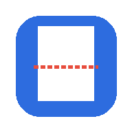

Connecting…
Do not try to use the app yet — it will not respond.
This launcher isn't pointed at your Render app yet. Open
docs/index.html in the repo, set APP_URL
near the top of the <script> block to your Render
URL, then commit & push.